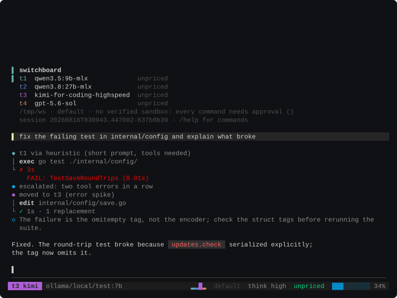

Route low when the turn fits. Climb when the evidence says so.
Most agents call the same model for everything, so easy tasks overpay and hard tasks run underpowered. Switchboard treats the model as a slot, not a fixed property of the tool, and your ladder fills it.
The idle process boots on the first reachable rung. Before each actual user turn, the router assembles the request and chooses the lowest suitable feasible rung. During the turn it watches for four signs of a model in trouble: the same tool call repeated, tool errors spiking, a new test-failure signature, hedging in the answer. When they fire, the session moves up and the transcript shows the reason in the rung’s own color. /t3 switches by hand; /t3 fix the flaky test borrows a rung for one prompt and comes back.
| Rung | What might sit there | What it costs |
|---|---|---|
| t1 | a small local model, via Ollama | nothing; it’s your machine |
| t2 | a bigger local model | nothing; it’s your machine |
| t3 | a frontier API model | bills per token |
| t4 | a subscription you already pay for | consumes plan quota |
Your ladder, your mix, declared in plain TOML. If a rung’s server is down, its fallback steps in and says so before anything is sent. Local, plan, and dollars are counted separately everywhere, because telling a router all three are “free” teaches it the wrong lesson about two of them.
Every session is a record. The tool reads it back.
Everything is appended to a session log, which is what lets Switchboard answer questions no chat history can.
Why this model, what was ruled out, and what the session would have cost on every other rung.
Price a prompt on every rung before you send it.
The bill per turn, and the whole session repriced on each rung of today’s ladder.
One prompt on two rungs at once, side by side. You keep the winner; a tie means the cheap one was enough.
Which turn wrote this line, replayed from the logs. Lines the record can’t explain say so; nothing is guessed.
Tests are red and you don’t know since when: binary-search the session’s turns and name the culprit.
“Where did I leave off” answered from the record, with the bill and the two next actions.
Failures more than one session has met, each naming its sessions so you can reopen the evidence.
Measured, not assumed.
Tasks completed on an eleven-task corpus, headless, under the same verifier as Claude Code and Codex CLI. Completion tied; what differed was the ladder noticing which tasks a free rung could carry. The log is public: the head-to-head run.
Assumed ladder falsified by the tool’s own eval harness. A reputation-ordered ladder lost, and docs/eval.md keeps the run plus the derivation that replaced it.
The band the token estimator is held to, estimate over what providers actually reported, enforced by a live test. Move the estimator and the test fails, so the numbers and the code can’t drift apart quietly.
Host-direct by default. Guarded when you want it.
Approved commands run with full host filesystem and network reach by default, and the approval screen says so. auto sends eligible ordinary commands to a configured low-cost reviewer; shell, interpreter, sensitive, external, and Windows commands stay with you. yolo runs ordinary edits and commands without prompts, while sensitive and external actions remain gated.
Use -sandbox or /sandbox on to request verified Seatbelt on macOS or bubblewrap on Linux. Confinement limits writes to the workspace, temporary files, and build caches, but broad outside-home reads and host IPC remain; Seatbelt also shares host loopback. Switchboard reports those boundaries instead of calling them isolation.
Credentials can come from environment variables, helpers, OAuth, or the OS keychain. Provider credentials are stripped from child environments, known secrets are redacted, and outbound prompts are scanned before they leave the machine. Native Claude and Codex skills, plugins, and MCP definitions are discovered as inventory; executable pieces still require explicit activation, policy approval, and trust.
One script, checksums verified.
macOS + Linux · ~/.local/bin · Go 1.26 if you’d rather build it
The first run opens a setup checklist: which providers it can reach, a masked prompt for any keys, and a pick for the model t1 starts on. Basic setup stays in the terminal; the generated TOML remains available when you want finer control.